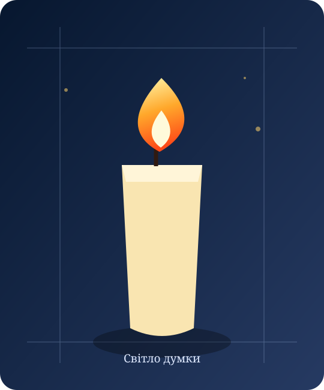

Точне розташування п’яти блоків за схемою завдання: 1 зверху • 2 / 4 / 5 у центрі • 3 знизу.
Зображення свічки відповідно до завдання. Використано локальну SVG-ілюстрацію, яка працює без підключення до стороннього сайту.

Відкрити оригінальне зображення із завдання ↗
Навчальний проєкт • HTML5, CSS3 • адаптивний макет • GitHub Pages